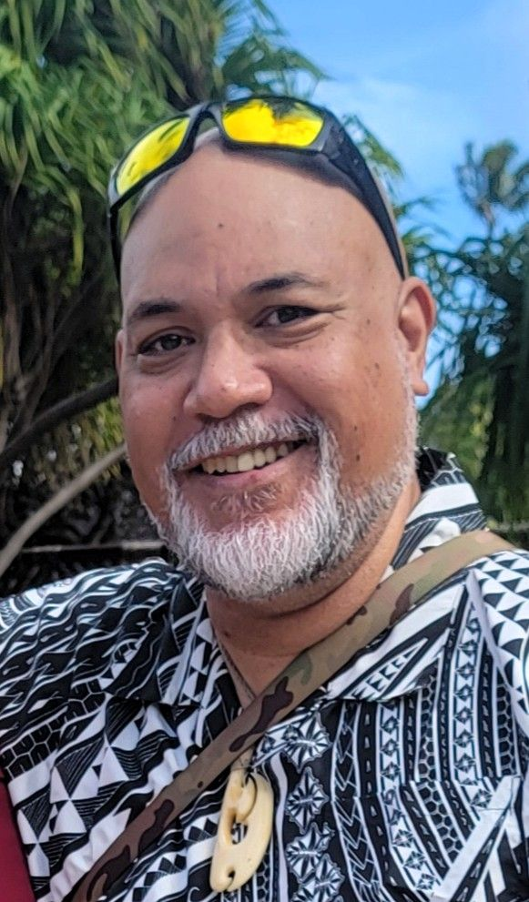

Barry James Fieeiki | WDD 130

Malo lelei! My name is Barry James Fieeiki and I am from Nuku'alofa, Tonga. I live here with my wife and five children, ages 5 to 17. I enjoy the beach, singing and playing music, and playing games with my children. This is my fourth term at BYU Pathways and I am enjoying learning new skills. I am pursuing a web development certificate.